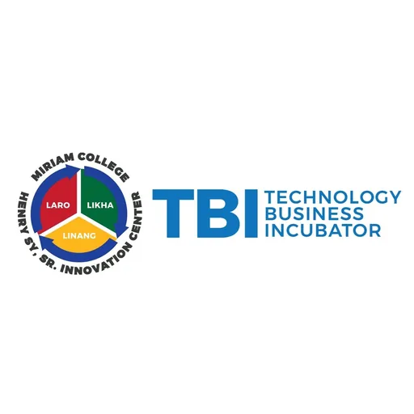

TBI Center at Miriam College — Henry Sy Sr. Innovation Center
Miriam College · NCR
The TBI Center at Miriam College, housed in the Henry Sy Sr. Innovation Center, is the Technology Business Incubator (TBI) of Miriam College — located along Katipunan Avenue in Quezon City. As part of the DOST-PCIEERD DOST-PCIEERD HEIRIT program of Metro Manila TBIs, the center supports technology entrepreneurship among Miriam College students and alumni in alignment with the college's mission of women's education and sustainable development.
- Category
- Technology Business Incubator
- Host institution
- Miriam College
- City
- Quezon City
- Region
- NCR
- Operating status
- Operating
About the Center
The center's banner research area is EduTech — a natural fit for a liberal arts women's college with strong programs in education, psychology, communications, and social sciences. The TBI supports entrepreneurs developing technology-based solutions for education, learning, and social impact, with a focus on women-led and women-serving innovations.
Programs & Services
- Startup incubation for technology entrepreneurs with priority in EduTech and social innovation
- Business development coaching: business model development, market validation, and pitch preparation
- Mentoring from Miriam College faculty and industry practitioners across education, technology, and business
- IP guidance and technology transfer support for student and alumni innovators
- Access to DOST-PCIEERD funding and demo day opportunities through the SCALE-NCR ecosystem
- Networking with fellow SCALE-NCR TBIs in the Metro Manila startup ecosystem
- Physical incubation space within Miriam College's Katipunan campus
Contact
Sources & references
- mc.edu.ph/innovation-center/about-us
- projects.pcieerd.dost.gov.ph/project/8792
- thepost.net.ph/news/campus/miriam-colleges-innovation-center-celebrates-8th…
Details are drawn from public records and the sources above, July 2026.
Startupreneur Innovation Hub · synced from the Notion catalog (July 2026) · status: published.